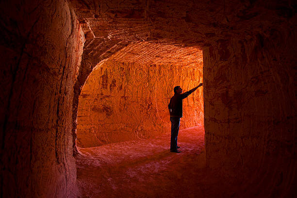

The word opal, as it is known today, is said to date back to ancient Greece as “opalios”. It is also claimed as a derivative from the 16th century word “opale” (opalus in Latin) or perhaps even from the Sanskrit “upala” meaning precious stone. Most scholars believe its meaning is more along the lines of precious stone or gem.
Onomacritus, a 5th Century BC oracle, wrote, “the delicate colour and tenderness of the opal reminded him of a loving and beautiful child” however it was the Romans (1st Century AD) who popularised the precious stone through Pliny the Elder, the Roman philosopher and naval commander. He wrote: “For in them you shall see the living fire of ruby, the glorious purple of the amethyst, the sea-green of the emerald, all glittering together in an incredible mixture of light”.
The modern fascination with Opal was sparked by an astonishing discovery by noted archaeologist Dr Louis Leakey in Kenya, Africa in 1939. He found an Opal artefact buried in the Nakuru cave which has been dated from 4000 BC!
Roman history tells us that a Roman Senator named Nonius had acquired a most beautiful Opal that was renowned though the ancient world. Mark Antony wished to give the stone to Cleopatra as a gift, Nonius did not want to part with his Opal, and was forced to flee for his life from Rome, taking the prized stone with him.
Around 250 BC Opal had been reported to originate from the Orient. However other reports indicate Opal mining was prevalent in Slovakia. These mines are believed to be the source of all the Opal used commercially until the discovery of Opal in Mexico in the 16th Century.
Through the sands of time, many European Emperors have found this magnificent gem of high appeal with the first recorded opal mining lease being granted during the late 15th Century in Slovakia.
